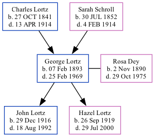

George Arthur Lortz 1893 - 1969
[ Home ] | [ Surnames Index ] | [ Family History ]The youngest of 10 children of Charles Lortz and Sarah Schroll, , George was the great-grandfather of Stephanie Hardesty (née Teten), was born in Utica, Seward County, Nebraska on Feb 7, 18931,2,3,4 and married Rosa Dey (with whom he had 2 children: John Peter and Hazel Mary) in York, , Nebraska on Oct 28, 1914.
During his life, he was living in Gresham, York, Nebraska in 19201; in Utica, Seward, Nebraska in 19302; and in Seward4.
He died on Feb 25, 1969 in Lincoln, Lancaster, Nebraska, USA3.
Parents
- Charles Eugene was born on Oct 27, 1841
- Sarah Angeline was born on Jul 30, 1852
Children
- John Peter was born on Dec 29, 1916
- Hazel Mary was born on Sep 26, 1919
Citations
- 1920 United States Federal Census Ancestry.com Operations Inc (Age: 27; Marital Status: Married; Relation to Head of House: Head)
- 1930 United States Federal Census Ancestry.com Operations Inc (Age: 37; Age: 87; Marital Status: Married; Relation to Head of House: Head)
- Social Security Death Index Ancestry.com Operations Inc
- U.S., World War I Draft Registration Cards, 1917-1918 Ancestry.com Operations Inc
Family Tree
Data (GEDCOM) maintained by Jay Weston Hannah, Omaha, Nebraska, USA.
Website generated by ged2site. Last updated on Jun 18, 2024.